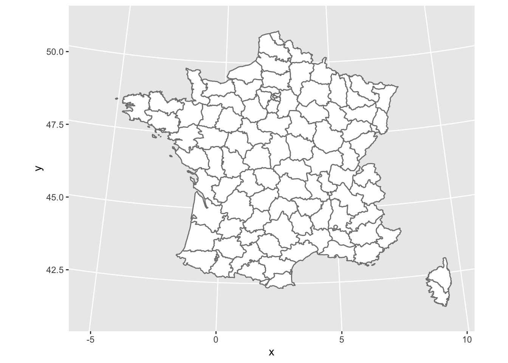
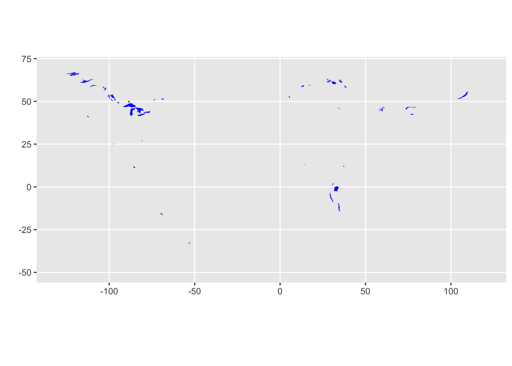
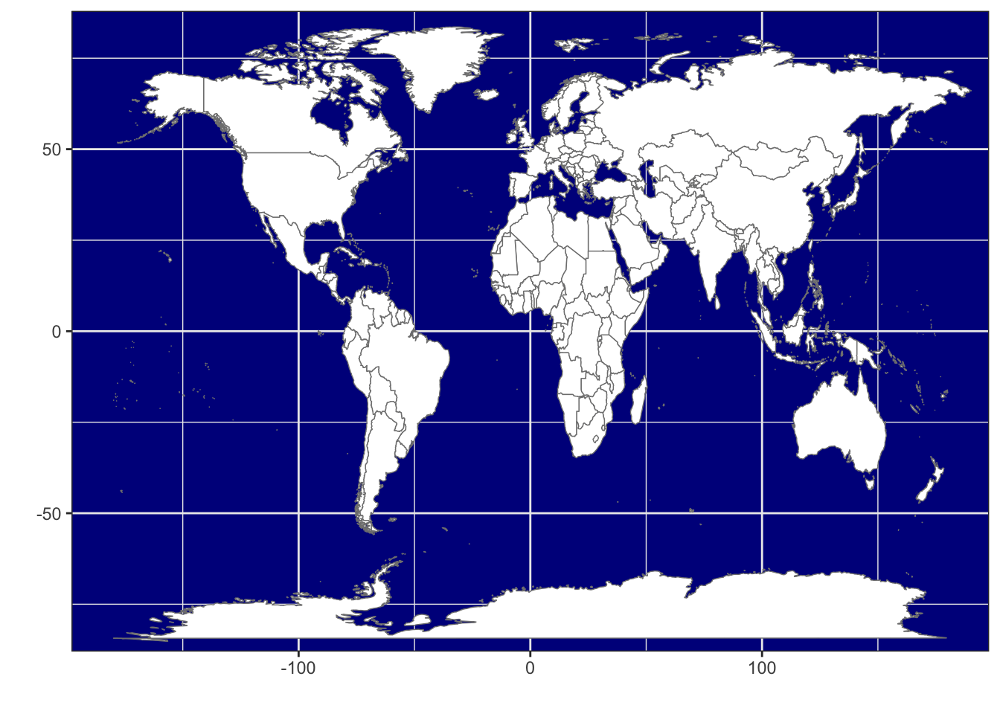
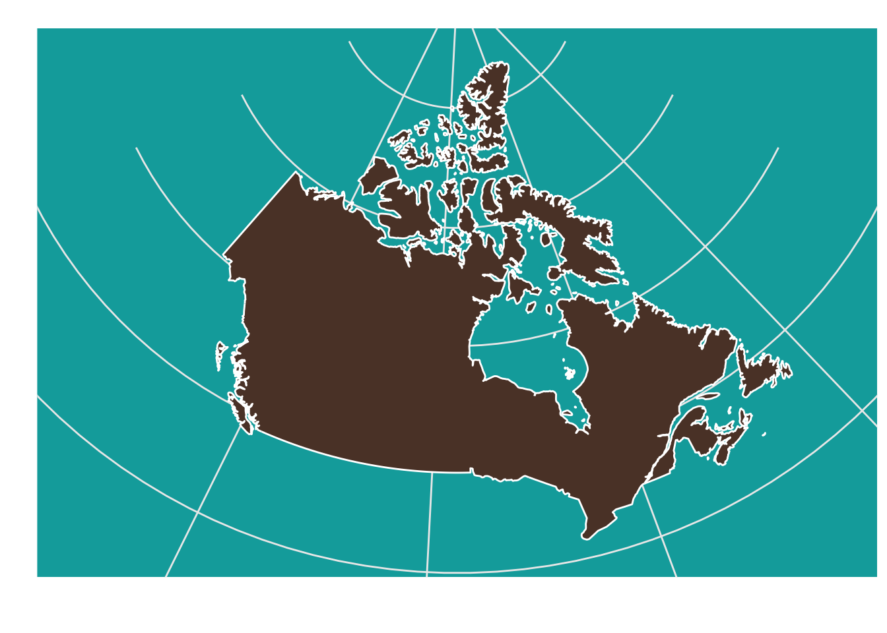

There are many ways to make maps with R. The two general types are: vector maps where regions are represented by a set of points and lines around region boundaries and tile maps where a pre-drawn map is downloaded from a cloud service such as Google maps. In both cases, points, lines, and colour tiles can be added to display data on the map. Vector maps are drawn from a series of points and so can be drawn using many different projections, giving you the freedom to choose the projection most suitable for your map. Tile maps are images and can’t be reprojected, but can have a lot of information on them in the form of colours for terrain, labels, and points of interest. Tile maps can be used in a pan-and-zoom mode like many familiar online mapping tools.
In this lesson we will look at drawing vector maps.
27.1 Vector map
Here is a map of the 48 continental US states, with a quantiative variable used to shade each region. To change the variable used to colour the states, simply provide a new dataset with a numeric column and a text column called “state”. The map is drawn with ggplot, so the other features of ggplot including annotation, setting colour scales, labelling axes, etc., are all available to you and work the same way as for other visualizations we have created.
The map_data function works with maps from the maps package, including two world maps (world and world2) and detailed maps of France, Italy, New Zealand, the USA and its states. The maps package has several other datasets including a list of canadian cities with population greater than about 1000. The world is a large and complex place and you will often need to obtain data and map boundaries for regions which are not readily available in this package. Some guidance appears at the end of the lesson, but this can be a challenging task.
The surface of the Earth is curved, so choices need to be made when plotting it on a flat surface. These choices are called projections. Here’s a map of France using an azimuthal equal area projection (see mapproj::mapproject() for more)
map_data<-map_data('france')ggplot(data =map_data, aes(group =group, map_id=region))+geom_map(map =map_data,aes(x =long, y =lat), fill ="white", colour ="#7f7f7f", alpha =0.5, size=0.5)+coord_map("azequalarea")

Incidentally, a frequently used projection for the USA is the Bonne. Revise the USA map to use that projection by adding the following code + coord_map("bonne", 45). (Albers: coord_map("albers", 40, 100) and Lambert: coord_map("lambert", 40, 100) are also used, although Lambert makes the USA look very wide in the North.)
Political boundaries for the world are available as “world” (centered on the Atlantic Ocean) or “world2” (centered on the Pacific Ocean.)
WorldData<-map_data('world')ggplot(WorldData, aes(map_id=region))+geom_map(map =WorldData,aes(x =long, y =lat), fill ="lightgray", colour ="#7f7f7f", alpha =0.5, size=0.5)+theme_bw()
Warning in geom_map(map = WorldData, aes(x = long, y = lat), fill =
"lightgray", : Ignoring unknown aesthetics: x and y

You can select a specific country if you want, for example, Canada:
my_map<-map_data('world', region='Canada')ggplot(my_map, aes(map_id=region))+geom_map(map =my_map,aes(x =long, y =lat), fill ="white", colour ="#7f7f7f", alpha =0.5, size=0.5)+theme_bw()+coord_map("albers", 60, 90)
Warning in geom_map(map = my_map, aes(x = long, y = lat), fill = "white", :
Ignoring unknown aesthetics: x and y

This map of Canada is made of 141 regions, separating islands, but does not contain provincial boundaries.
ggplot(my_map, aes(map_id=region))+geom_map(map =my_map,aes(x =long, y =lat), size=0.5)+theme_bw()+coord_map("albers", 60, 90)
Warning in geom_map(map = my_map, aes(x = long, y = lat), size = 0.5): Ignoring
unknown aesthetics: x and y

Here is a list of 252 regions available in the world map (abbreviated here).
The map of the globe and even of Canada does not look good at high latitudes, espcially if either pole is included. Here is a projection that is a bit more suitable for those regions. The geom_map function is not perfect; it creates stray lines when a region is clipped by the projection.
p1<-ggplot(WorldData, aes(group=group, map_id=region))+geom_map(map =WorldData, aes(long, lat), fill ="gray80", colour ="#7f7f7f", alpha =0.5, size=0.5)+labs(x="", y="")+theme_bw()+theme(axis.text =element_blank(), axis.ticks =element_blank(), rect =element_blank())
Warning in geom_map(map = WorldData, aes(long, lat), fill = "gray80", colour =
"#7f7f7f", : Ignoring unknown aesthetics: x and y
p2a<-p1+coord_map("perspective", 2.5, orientation=c(60, -100, 0))# observer distance 2.5 Earth radii p2b<-p1+coord_map("perspective", 2.5, orientation=c(-60, 80, 0))# try also orthographic, with no observer distancep2a+p2b
27.2 Detailed maps of Canada
Detailed maps of Canada are not part of the maps package in R, so we need to do a bit of extra work. I will show you how to obtain map files called “shapefiles” from Statistics Canada and learn to use them with R. This is well worth learning as many maps are distributed in this format after being developed with GIS software. You don’t need to repeat these steps unless you want to make your own custom maps of Canada.
Here are some packages we need to get the job done.
library(sf)# the base package manipulating shapes# library(rgdal) # geo data abstraction library # replaced with sf, stars, terra# See https://r-spatial.org/r/2022/04/12/evolution.htmllibrary(geojsonio)# geo json input and output# library(spdplyr) # the `dplyr` counterpart for shapes # archived, don't uselibrary(rmapshaper)# the package that allows geo shape transformation
I followed these instructions to get and transform the shape files for 2011 census divisions in Canada. There are many other options. The 2011 files are marked as archived content, but I had trouble with the 2016 files. Choose ARCGis .shp file format. Pick the cartographic boundary file. You should get a zip file called gpr_000b11a_e.
The shapefiles are very detailed and need to be simplified before being plotted with R. Here is some code to simplify these very detailed shapefiles down to simpler maps. This processing took about two hours on my computer, so when we are done we store the results in a file to enable rapid reuse.
canada_raw = readOGR(dsn = "~/Downloads/gcd_000b11a_e", layer = "gcd_000b11a_e", encoding = 'latin1')
canada_raw_json <- geojson_json(canada_raw) # takes a few minutes
canada_raw_sim <- ms_simplify(canada_raw_json) # also takes a few minutes
geojson_write(canada_raw_sim, file = "static/canada_cd_sim.geojson")
27.2.1 Draw the map
Now that the preliminary work is done we can read the map data into R and get to mapmaking.
ggplot()+geom_sf(aes(fill =PRUID), color ="gray60", size =0.1, data =canada_cd)+geom_sf(data =sf_cities, color ='#001e73', alpha =0.5, size =3)+# 17coord_sf(crs =crs_string)+scale_fill_manual(values =map_colors)+guides(fill =FALSE)+theme_map()+theme(panel.grid.major =element_line(color ="white"), legend.key =element_rect(color ="gray40", size =0.1))
Warning: The `size` argument of `element_rect()` is deprecated as of ggplot2 3.4.0.
ℹ Please use the `linewidth` argument instead.
It’s easy to focus in on the Maritimes region of Canada – just filter the data to include only the province or census districts you want. Here are some of the names in the map data that you can use for filtering.
[1] "Le Haut-Saint-Laurent" "Québec" "Comox Valley"
[4] "Region 3" "Les Etchemins" "La Mitis"
[7] "Stikine" "Abitibi-Ouest" "Colchester"
[10] "Madawaska"
I’ve changed the latitude and longitude parameters for the projection to values more suitable for this part of Canada.
crs_string2="+proj=lcc +lat_1=40 +lat_2=50 +lon_0=-75 +x_0=0 +y_0=0 +datum=NAD83 +units=m +no_defs"ggplot()+geom_sf(aes(fill =PRUID), color ="gray60", size =0.1, data =canada_cd|>filter(PRNAME%in%c("Nova Scotia / Nouvelle-Écosse", "New Brunswick / Nouveau-Brunswick", "Prince Edward Island / Île-du-Prince-Édouard")))+# geom_sf(data = sf_cities, color = '#001e73', alpha = 0.5, size = 3) + # 17coord_sf(crs =crs_string2)+scale_fill_manual(values =map_colors)+guides(fill =FALSE)+theme_map()+theme(panel.grid.major =element_line(color ="white"), legend.key =element_rect(color ="gray40", size =0.1))
You can also crop the data to be drawn or the projected map. This is a bit more complex than you might expect since you need to be sure you are specifying the area to be plotted and the actual projected coordinates in the same coordinate system. You can easily get errors (invalid points in a projection), empty maps, or croppings that don’t look right. See the link at the start of this paragraph for several approaches.
crs_string2="+proj=lcc +lat_1=40 +lat_2=50 +lon_0=-75 +x_0=0 +y_0=0 +datum=NAD83 +units=m +no_defs"zoom_to<-c(-64.3683, 45.8979)# Sackville, New Brunswick; could try c(-63.5752, 44.6488) # Halifaxzoom_level<-6C<-40075016.686# ~ circumference of Earth in metersx_span<-C/2^zoom_levely_span<-C/2^(zoom_level)zoom_to_xy<-st_transform(st_sfc(st_point(zoom_to), crs =4326), crs =crs_string2)disp_window<-st_sfc(st_point(st_coordinates(zoom_to_xy-c(x_span/2, y_span/2))),st_point(st_coordinates(zoom_to_xy+c(x_span/2, y_span/2))), crs =crs_string2)ggplot()+geom_sf(aes(fill =PRUID), color ="gray60", size =0.1, data =canada_cd)+# geom_sf(data = sf_cities, color = '#001e73', alpha = 0.5, size = 3) + # 17geom_sf(data =zoom_to_xy, color ='red')+coord_sf(xlim =st_coordinates(disp_window)[,'X'], ylim =st_coordinates(disp_window)[,'Y'], crs =crs_string2, datum =crs_string2)+scale_fill_manual(values =map_colors)+guides(fill =FALSE)+theme_map()+theme(panel.grid.major =element_line(color ="white"), legend.key =element_rect(color ="gray40", size =0.1))
27.2.2 Just the map, please
Here is a file of province boundaries that can be used without showing the census district regions. I’ve added a latitude-longitude grid to the map.
Map making is complex for at least two reasons: obtaining the data to describe complex political boundaries and using suitable projections for your data. This lesson introduced you to some simple solutions to both problems and gave a starting point for learning more about the complexity of making customized maps.